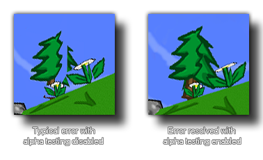

Esta función habilitará o deshabilitará las pruebas alfa para su juego (por defecto, esto está deshabilitado). Al cambiar las pruebas alfa, puede usar la función complementaria gpu_set_alphatestref para establecer el valor de "corte" en el que todos los valores alfa se establecerán en 0. La imagen a continuación muestra la diferencia que se puede ver cuando la prueba alfa está activada o desactivada: 
NOTA: Esta función puede afectar negativamente el rendimiento en dispositivos iOS, Android y Windows Phone.
gpu_set_alphatestenable(enable);
Argumento Descripción enable Habilitar o deshabilitar la prueba alfa ( true / false )
N/A
if !gpu_get_alphatestenable()
{
gpu_set_alphatestenable(true);
gpu_set_alphatestref(128);
}
El código anterior verificará si la prueba alfa está habilitada y si no, activará las pruebas alfa y establecerá el umbral de prueba en 128 (solo se dibujarán los píxeles con un alfa por encima de 0,5).